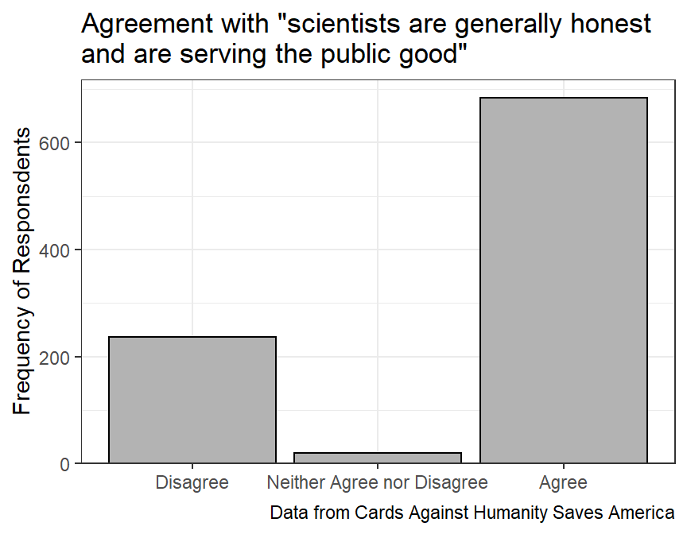
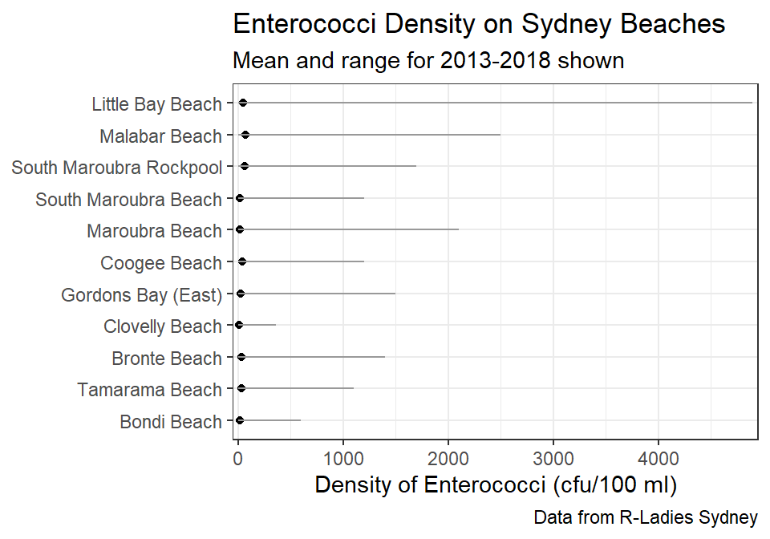
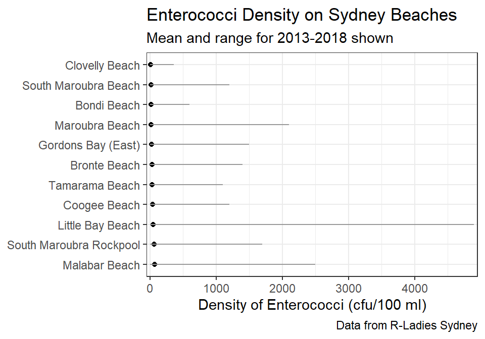

Module 10 Factors
Factors are a special case of character variables in R. Factors are primarily used for categorical data, especially if summaries of that data are to be displayed in other than alphabetical order. For example, a simple count of the number of observations in each loc of the bears data frame introduced in Section 3.3.1 shows that the categories of the character variable are displayed alphabetically by default.
bears <- read_csv(file.path("data","Bears.csv"))
tmp <- bears %>%
group_by(loc) %>%
summarize(n=n())
tmp#R> # A tibble: 3 x 2
#R> loc n
#R> <chr> <int>
#R> 1 Ashland 2
#R> 2 Bayfield 3
#R> 3 Douglas 3To display these results in other than alphabetical order will require the use of factors, which will be illustrated in this module.
Factors have a long and, for some, dubious history in R. The forcats package was developed to aid working with factors in R. While it is not critical to understanding the methods of this module, the stringsAsFactors: An unauthorized biography and stringsAsFactors = <sigh> are interesting reads about how unforeseen issues can arise when using factors. Many of these issues are addressed when using forcats, which is loaded with tidyverse.
10.1 Creating Factors
A variable is converted to a factor class by including that variable in factor(). The code below creates a new data frame where loc is now a factor, as indicated by <fct> below loc when the tibble is printed.
tmp <- bears %>%
mutate(loc=factor(loc))
tmp#R> # A tibble: 8 x 3
#R> length.cm weight.kg loc
#R> <dbl> <dbl> <fct>
#R> 1 139 110 Bayfield
#R> 2 120. 60 Bayfield
#R> 3 149 85 Bayfield
#R> 4 141 100 Ashland
#R> 5 141 95 Ashland
#R> 6 150 85 Douglas
#R> 7 130. 105 Douglas
#R> 8 150 110 DouglasNothing is changed when the data are displayed as above. However, behind-the-scenes the factor variable consists of numerical codes that are mapped to levels (i.e., the categories) of the factor variable. The order here is still alphabetical because the order of the levels was not specifically controlled when creating the factor variable. Thus, behind-the-scenes “1” is mapped to “Ashland,” “2” to “Bayfield,” and “3” to “Douglas.” This mapping is shown with loc_nums below.
tmp %>% mutate(loc_nums=as.numeric(loc))#R> # A tibble: 8 x 4
#R> length.cm weight.kg loc loc_nums
#R> <dbl> <dbl> <fct> <dbl>
#R> 1 139 110 Bayfield 2
#R> 2 120. 60 Bayfield 2
#R> 3 149 85 Bayfield 2
#R> 4 141 100 Ashland 1
#R> 5 141 95 Ashland 1
#R> 6 150 85 Douglas 3
#R> 7 130. 105 Douglas 3
#R> 8 150 110 Douglas 3Suppose, however, that we prefer that the levels of the loc variable be ordered from West to East, as in Douglas than Bayfield and then Ashland. The specific order of the levels can be set by supplying the ordered levels in a vector given to levels= within factor().
tmp <- bears %>%
mutate(loc=factor(loc,levels=c("Douglas","Bayfield","Ashland")))
tmp#R> # A tibble: 8 x 3
#R> length.cm weight.kg loc
#R> <dbl> <dbl> <fct>
#R> 1 139 110 Bayfield
#R> 2 120. 60 Bayfield
#R> 3 149 85 Bayfield
#R> 4 141 100 Ashland
#R> 5 141 95 Ashland
#R> 6 150 85 Douglas
#R> 7 130. 105 Douglas
#R> 8 150 110 DouglasAgain, the data are not fundamentally altered, but the codes underlying the factor variables are.47
tmp %>% mutate(loc_nums=as.numeric(loc))#R> # A tibble: 8 x 4
#R> length.cm weight.kg loc loc_nums
#R> <dbl> <dbl> <fct> <dbl>
#R> 1 139 110 Bayfield 2
#R> 2 120. 60 Bayfield 2
#R> 3 149 85 Bayfield 2
#R> 4 141 100 Ashland 3
#R> 5 141 95 Ashland 3
#R> 6 150 85 Douglas 1
#R> 7 130. 105 Douglas 1
#R> 8 150 110 Douglas 1When setting the levels of a factor variable make sure that all levels are spelled exactly as they are in the original variable. For example, see the major problem created below when a level is erroneously set (i.e., “bayfield” is not capitalized).
tmp <- bears %>%
mutate(loc=factor(loc,levels=c("Douglas","bayfield","Ashland")))
tmp#R> # A tibble: 8 x 3
#R> length.cm weight.kg loc
#R> <dbl> <dbl> <fct>
#R> 1 139 110 <NA>
#R> 2 120. 60 <NA>
#R> 3 149 85 <NA>
#R> 4 141 100 Ashland
#R> 5 141 95 Ashland
#R> 6 150 85 Douglas
#R> 7 130. 105 Douglas
#R> 8 150 110 DouglasAdditionally, make sure to include all possible levels when creating the levels.
tmp <- bears %>%
mutate(loc=factor(loc,levels=c("Douglas","Ashland")))
tmp#R> # A tibble: 8 x 3
#R> length.cm weight.kg loc
#R> <dbl> <dbl> <fct>
#R> 1 139 110 <NA>
#R> 2 120. 60 <NA>
#R> 3 149 85 <NA>
#R> 4 141 100 Ashland
#R> 5 141 95 Ashland
#R> 6 150 85 Douglas
#R> 7 130. 105 Douglas
#R> 8 150 110 DouglasGiven these last two issues it is important to understand what levels exist within a variable. If the variable is a character class (and not yet a factor) then use unique() to see the list of levels.
unique(bears$loc)#R> [1] "Bayfield" "Ashland" "Douglas"However, if the variable is a factor class already then use levels() to see the list of levels along with their order.
levels(tmp$loc)#R> [1] "Douglas" "Ashland"
10.2 Changing Factor Order
Factor levels can be manually reordered using levels= as shown in the previous section. However functions in forcats provide other methods to simplify reordering levels for common situations.
Levels can be reordered based on the value of another variable with fct_reorder(). This function takes the factor variable as the first argument and a numeric variable that contains values for which to reorder the factor levels as the second argument. Optionally a third argument called .fun can be used to calculate a summary of the numeric variable to use for reordering.48
For example, the code below orders the levels in loc by the median length of the bears.
tmp <- bears %>%
mutate(loc=fct_reorder(loc,length.cm))
levels(tmp$loc)#R> [1] "Bayfield" "Ashland" "Douglas"## Checking
tmp %>%
group_by(loc) %>%
summarize(n=n(),
mdn=median(length.cm))#R> # A tibble: 3 x 3
#R> loc n mdn
#R> <fct> <int> <dbl>
#R> 1 Bayfield 3 139
#R> 2 Ashland 2 141
#R> 3 Douglas 3 150Alternatively, the code below orders the levels of loc by the minimum length of the bears (i.e., using min in .fun=).
tmp <- bears %>%
mutate(loc=fct_reorder(loc,length.cm,.fun=min))
levels(tmp$loc)#R> [1] "Bayfield" "Douglas" "Ashland"## Checking
tmp %>%
group_by(loc) %>%
summarize(n=n(),
min=min(length.cm))#R> # A tibble: 3 x 3
#R> loc n min
#R> <fct> <int> <dbl>
#R> 1 Bayfield 3 120.
#R> 2 Douglas 3 130.
#R> 3 Ashland 2 141
Specific levels are moved to the beginning of the order of levels with fct_relevel(). The first argument to this function is the factor variable and subsequent arguments are levels to move to the “beginning of the line.” For example, the following code moves “Bayfield” to the beginning of the order.
tmp <- bears %>%
mutate(loc=fct_relevel(loc,"Bayfield"))
levels(tmp$loc)#R> [1] "Bayfield" "Ashland" "Douglas"Alternatively, both “Bayfield” and “Douglas” are moved to the beginning below
tmp <- bears %>%
mutate(loc=fct_relevel(loc,"Bayfield","Douglas"))
levels(tmp$loc)#R> [1] "Bayfield" "Douglas" "Ashland"
The order of levels for a factor variable are reversed with fct_rev().
tmp <- bears %>%
mutate(loc=fct_rev(loc))
levels(tmp$loc)#R> [1] "Douglas" "Bayfield" "Ashland"The fct_rev() function can be used with fct_reorder() to change the order from ascending to descending order. For example, the code below changes the factor levels to be in descending order of minimum length.
tmp <- bears %>%
mutate(loc=fct_reorder(loc,length.cm,.fun=min),
loc=fct_rev(loc))
## Checking
tmp %>%
group_by(loc) %>%
summarize(n=n(),
min=min(length.cm))#R> # A tibble: 3 x 3
#R> loc n min
#R> <fct> <int> <dbl>
#R> 1 Ashland 2 141
#R> 2 Douglas 3 130.
#R> 3 Bayfield 3 120.
The fct_infreq() function is used to order the levels by decreasing frequency of their occurrence.
tmp <- bears %>%
mutate(loc=fct_infreq(loc))
## Checking
tmp %>%
group_by(loc) %>%
summarize(n=n())#R> # A tibble: 3 x 2
#R> loc n
#R> <fct> <int>
#R> 1 Bayfield 3
#R> 2 Douglas 3
#R> 3 Ashland 2Of course, using fct_rev() with fct_infreq() would order the levels in ascending frequency of occurrence.
tmp <- bears %>%
mutate(loc=fct_rev(fct_infreq(loc)))
## Checking
tmp %>%
group_by(loc) %>%
summarize(n=n())#R> # A tibble: 3 x 2
#R> loc n
#R> <fct> <int>
#R> 1 Ashland 2
#R> 2 Douglas 3
#R> 3 Bayfield 3
10.3 Changing Factor Levels
In some instances it may be beneficial to change the names of the levels or to collapse or lump levels together. Methods for performing these changes are demonstrated in this section using data on the density and basal area of tree species located on plots in the Apostle Islands that were designated as “Balsam Fir” plots. These data were extracted from Sanders and Grochowski (2012)49 and are stored in APIS_FirPlots.xlsx.
aip <- readxl::read_excel(file.path("data","APIS_FirPlots.xlsx"))
aip#R> # A tibble: 26 x 4
#R> plot species density basal_area
#R> <dbl> <chr> <dbl> <dbl>
#R> 1 1011 Acer rubrum 11.1 0.4
#R> 2 1011 Betula alleghaniensis 156. 1.7
#R> 3 1011 Betula papyrifera 44.4 0.7
#R> 4 1011 Sorbus decora 22.2 0.2
#R> 5 1011 unknown tree - hardwood 11.1 0.6
#R> 6 1011 Abies balsamea 878. 2.5
#R> 7 1011 unknown tree - softwood 122. 1.2
#R> 8 1031 Acer saccharum 55.6 0.1
#R> 9 1031 Acer sp. 44.4 0.3
#R> 10 1031 Betula papyrifera 33.3 1.5
#R> # ... with 16 more rowsThese data are briefly summarized below.
aip_sum1 <- aip %>%
group_by(species) %>%
summarize(n=n(),
ttl_density=sum(density),
ttl_barea=sum(basal_area))
aip_sum1#R> # A tibble: 14 x 4
#R> species n ttl_density ttl_barea
#R> <chr> <int> <dbl> <dbl>
#R> 1 Abies balsamea 4 1000 2.8
#R> 2 Acer rubrum 1 11.1 0.4
#R> 3 Acer saccharum 3 77.8 0.2
#R> 4 Acer sp. 1 44.4 0.3
#R> 5 Acer spicatum 1 11.1 0
#R> 6 Betula alleghaniensis 3 178. 2.3
#R> 7 Betula papyrifera 2 77.7 2.2
#R> 8 Betula sp. 1 11.1 0.3
#R> 9 Populus tremuloides 1 22.2 1.5
#R> 10 Quercus rubra 1 11.1 0
#R> 11 Sorbus decora 1 22.2 0.2
#R> 12 Thuja occidentalis 1 11.1 0.7
#R> 13 unknown tree - hardwood 4 111 4.3
#R> 14 unknown tree - softwood 2 144. 1.2The summary above shows several species within a few genera (e.g., Acer). A researcher may wish to collapse these species into one level that represents the genera. For example, one may want to collapse “Acer rubrum,” “Acer saccharum,” “Acer spicatum,” and “Acer sp.” into a single level called “Acer sp.”
The “collapsing” of multiple levels into one level is accomplished with fct_collapse(). The first argument to this function is the factor variable containing the “old” levels. Subsequent arguments are formed by setting a new level name equal to a vector containing old level names to collapse.
For example the code below uses fct_collapse() to create a new species2 variable that collapses the multiple “Acer” and “Betula” levels into two levels specific to each genera. To allow ease of comparison of the two “species” variables I then moved species2 to be right after species and arranged the rows by species.50
aip %<>%
mutate(species2=fct_collapse(species,
"Acer sp."=c("Acer rubrum","Acer saccharum",
"Acer sp.","Acer spicatum"),
"Betula sp."=c("Betula alleghaniensis",
"Betula papyrifera",
"Betula sp."),
"Unknown"=c("unknown tree - hardwood",
"unknown tree - softwood"))) %>%
relocate(species,.after=species) %>%
arrange(species)
aip#R> # A tibble: 26 x 5
#R> plot species density basal_area species2
#R> <dbl> <chr> <dbl> <dbl> <fct>
#R> 1 1011 Abies balsamea 878. 2.5 Abies balsamea
#R> 2 1031 Abies balsamea 33.3 0.1 Abies balsamea
#R> 3 1034 Abies balsamea 66.7 0.1 Abies balsamea
#R> 4 1035 Abies balsamea 22.2 0.1 Abies balsamea
#R> 5 1011 Acer rubrum 11.1 0.4 Acer sp.
#R> 6 1031 Acer saccharum 55.6 0.1 Acer sp.
#R> 7 1034 Acer saccharum 11.1 0.1 Acer sp.
#R> 8 1035 Acer saccharum 11.1 0 Acer sp.
#R> 9 1031 Acer sp. 44.4 0.3 Acer sp.
#R> 10 1034 Acer spicatum 11.1 0 Acer sp.
#R> # ... with 16 more rowsTo highlight the most abundance species in further analysis below, the levels of species2 were ordered in descending values of the sum of density (using fct_reorder() and fct_rev()).
aip %<>%
mutate(species2=fct_rev(fct_reorder(species2,density,.fun=sum)))Total density and total basal area by level of species2, where the levels of species2 are ordered in descending order of the total density is then shown below.
aip_sum2 <- aip %>%
group_by(species2) %>%
summarize(n=n(),
ttl_density=sum(density),
ttl_barea=sum(basal_area))
aip_sum2#R> # A tibble: 8 x 4
#R> species2 n ttl_density ttl_barea
#R> <fct> <int> <dbl> <dbl>
#R> 1 Abies balsamea 4 1000 2.8
#R> 2 Betula sp. 6 267. 4.8
#R> 3 Unknown 6 255. 5.5
#R> 4 Acer sp. 6 144. 0.9
#R> 5 Sorbus decora 1 22.2 0.2
#R> 6 Populus tremuloides 1 22.2 1.5
#R> 7 Thuja occidentalis 1 11.1 0.7
#R> 8 Quercus rubra 1 11.1 0The result above indicate that four of the “species” dominated the results. It may be useful (especially if graphing these results) to “lump” the four least abundant “species” into an “Other” category. This type of “lumping” can be accomplished with fct_lump_n() which requires the factor variable as its first argument andn= to indicate the top n levels to not lump into an “Other” category. For example, the code below will lump all levels in species2 after the top four into an “Other” category of the new species3 variable. The summary results illustrate the lumping.
aip <- aip %>%
mutate(species3=fct_lump_n(species2,n=4))
aip_sum3 <- aip %>%
group_by(species3) %>%
summarize(n=n(),
ttl_density=sum(density),
ttl_barea=sum(basal_area))
aip_sum3#R> # A tibble: 5 x 4
#R> species3 n ttl_density ttl_barea
#R> <fct> <int> <dbl> <dbl>
#R> 1 Abies balsamea 4 1000 2.8
#R> 2 Betula sp. 6 267. 4.8
#R> 3 Unknown 6 255. 5.5
#R> 4 Acer sp. 6 144. 0.9
#R> 5 Other 4 66.6 2.4Other versions of fct_lump_XXX(), such as fct_lump_prop() and fct_lump_min(), can be used when ordering by frequency rather than be another variable as shown here.
Finally, the names of specific levels can be changed with fct_recode(). The first argument to this function is the original factor variable. Subsequent arguments are of the form new level name equal to old level name. Any levels not listed in fct_recode() will be retained with their original names. For example, the code below creates a new species4 variable with new common names for the three “species” levels remaining in species3. The results are seen in the summary below.
aip %<>%
mutate(species4=fct_recode(species3,
"Maple" = "Acer sp.",
"Birch" = "Betula sp.",
"Balsam Fir" = "Abies balsamea"))
aip_sum4 <- aip %>%
group_by(species4) %>%
summarize(n=n(),
ttl_density=sum(density),
ttl_barea=sum(basal_area))
aip_sum4#R> # A tibble: 5 x 4
#R> species4 n ttl_density ttl_barea
#R> <fct> <int> <dbl> <dbl>
#R> 1 Balsam Fir 4 1000 2.8
#R> 2 Birch 6 267. 4.8
#R> 3 Unknown 6 255. 5.5
#R> 4 Maple 6 144. 0.9
#R> 5 Other 4 66.6 2.4
10.4 Examples in Context
10.4.1 Pulse of the Nation Survey
Cards Against Humanity Saves America created monthly polls to assess what they called the “Pulse of the Nation.” “Cards” partnered with Survey Sampling International to contact a nationally representative sample of the American public. For the first three polls, they contacted potential respondents on their cell phones and landlines, and a total of about 3000 adults ultimately participated i the poll. Results from the first poll are in 201709-CAH_PulseOfTheNation.csv51, which are read in below.
PON <- read_csv(file.path("data","201709-CAH_PulseOfTheNation.csv"))
PON#R> # A tibble: 1,000 x 28
#R> Income Gender Age `Age Range` `Political Affiliation` `Do you approve or d~
#R> <dbl> <chr> <dbl> <chr> <chr> <chr>
#R> 1 8000 Female 64 55-64 Democrat Strongly disapprove
#R> 2 68000 Female 56 55-64 Democrat Strongly disapprove
#R> 3 46000 Male 63 55-64 Independent Somewhat Approve
#R> 4 51000 Male 48 45-54 Republican Strongly Approve
#R> 5 100000 Female 32 25-34 Democrat Somewhat Approve
#R> 6 54000 Female 64 55-64 Democrat Strongly disapprove
#R> 7 83000 Male 61 55-64 Independent Somewhat Approve
#R> 8 114000 Female 64 55-64 Republican Somewhat disapprove
#R> 9 90000 Female 64 55-64 Republican Somewhat Approve
#R> 10 5000 Female 68 65+ Democrat Somewhat disapprove
#R> # ... with 990 more rows, and 22 more variables:
#R> # What is your highest level of education? <chr>, Q5OTH1 <chr>,
#R> # What is your race? <chr>, Q6OTH1 <chr>, What is your marital status? <chr>,
#R> # Q7OTH1 <chr>, q8x <chr>,
#R> # What would you say is the likelihood that your current job will be entirely performed by robots or computers within the next decade? <chr>,
#R> # Do you believe that climate change is real and caused by people, real but not caused by people, or not real at all? <chr>,
#R> # How many Transformers movies have you seen? <dbl>, q11x <chr>, ...The variables in the data frame are generally the actual questions asked in the poll. These are both difficult to read and to work with. To get a better look at these variables I used names(), which when given a data frame returns all the variable names of that data frame.
names(PON)#R> [1] "Income"
#R> [2] "Gender"
#R> [3] "Age"
#R> [4] "Age Range"
#R> [5] "Political Affiliation"
#R> [6] "Do you approve or disapprove of how Donald Trump is handling his job as president?"
#R> [7] "What is your highest level of education?"
#R> [8] "Q5OTH1"
#R> [9] "What is your race?"
#R> [10] "Q6OTH1"
#R> [11] "What is your marital status?"
#R> [12] "Q7OTH1"
#R> [13] "q8x"
#R> [14] "What would you say is the likelihood that your current job will be entirely performed by robots or computers within the next decade?"
#R> [15] "Do you believe that climate change is real and caused by people, real but not caused by people, or not real at all?"
#R> [16] "How many Transformers movies have you seen?"
#R> [17] "q11x"
#R> [18] "Do you agree or disagree with the following statement: scientists are generally honest and are serving the public good."
#R> [19] "Do you agree or disagree with the following statement: vaccines are safe and protect children from disease."
#R> [20] "How many books, if any, have you read in the past year?"
#R> [21] "q14x"
#R> [22] "Do you believe in ghosts?"
#R> [23] "What percentage of the federal budget would you estimate is spent on scientific research?"
#R> [24] "q16x"
#R> [25] "Is federal funding of scientific research too high, too low, or about right?"
#R> [26] "True or false: the earth is always farther away from the sun in the winter than in the summer."
#R> [27] "If you had to choose: would you rather be smart and sad, or dumb and happy?"
#R> [28] "Do you think it is acceptable or unacceptable to urinate in the shower?"For this analysis I want to focus on the Political Affiliation, Age Range, and the three variables related to education, opinion about climate change, and opinion about the honesty of scientists. These last three variables have very long names so it will be easier to refer to them by their column number. From above, it is noted that the “education” variable is column 7, the climate change variable is in column 15, and the “scientists honesty” question is in column 18. In the code below, I rename each of the columns (and Age Range) and then reduce the data frame to just those variables.
PON %<>%
rename(polit_aff=`Political Affiliation`,age_range=`Age Range`,
education=7,climate=15,scihon=18) %>%
select(polit_aff,age_range,education,climate,scihon)
PON#R> # A tibble: 1,000 x 5
#R> polit_aff age_range education climate scihon
#R> <chr> <chr> <chr> <chr> <chr>
#R> 1 Democrat 55-64 College degree Real and Caused by People Strongly ~
#R> 2 Democrat 55-64 High school DK/REF Somewhat ~
#R> 3 Independent 55-64 Some college Real but not Caused by People Somewhat ~
#R> 4 Republican 45-54 High school Not Real At All Somewhat ~
#R> 5 Democrat 25-34 Some college Real and Caused by People Strongly ~
#R> 6 Democrat 55-64 Some college Real and Caused by People Strongly ~
#R> 7 Independent 55-64 College degree Real but not Caused by People Strongly ~
#R> 8 Republican 55-64 College degree Real and Caused by People Somewhat ~
#R> 9 Republican 55-64 High school Real and Caused by People Somewhat ~
#R> 10 Democrat 65+ Some college Real and Caused by People Somewhat ~
#R> # ... with 990 more rowsAll remaining variables are categorical and for my analysis purposes I want each to be a factor. Before converting these variables to factors I examine the levels that appear in each.
unique(PON$polit_aff)#R> [1] "Democrat" "Independent" "Republican" "DK/REF"unique(PON$age_range)#R> [1] "55-64" "45-54" "25-34" "65+" "35-44" "18-24"unique(PON$education)#R> [1] "College degree" "High school" "Some college" "Graduate degree"
#R> [5] "DK/REF" "Other"unique(PON$climate)#R> [1] "Real and Caused by People" "DK/REF"
#R> [3] "Real but not Caused by People" "Not Real At All"unique(PON$scihon)#R> [1] "Strongly Agree" "Somewhat Agree"
#R> [3] "Somewhat Disagree" "Strongly Disagree"
#R> [5] "DK/REF" "Neither Agree nor Disagree"From this examination of levels, I made the following notes:
- Respondents were allowed to answer “Don’t Know” or refuse to answer which were coded as “DK/REF.” My general preference is to have “DK/REF” answers be the last level.
- The levels for
age_rangewill not need to be controlled because the numbers will naturally alphabetically order (as the numbers are all two digits; the order might not be natural if there were some one digit (say “1-17”) or three digit (say “100+”) numbers). - Levels in
educationandscihonneed to be ordered according to their natural order (i.e., increasing education and increasing level of agreement). - I will order the levels for
climatebased on my understanding of what the correct answer is (i.e., I will order the answers from correct to less correct). - I will order the levels of
polit_affso that “Independent” is in the middle (which will happen alphabetically) and “DK/REF” is last.
Creation of these factors is below. Note that to move “DK/REF” to the end of polit_aff I used fct_relevel() with after=Inf to move the level to the last position.
PON %<>%
mutate(polit_aff=factor(polit_aff),
polit_aff=fct_relevel(polit_aff,"DK/REF",after=Inf),
age_range=factor(age_range),
education=factor(education,levels=c("High school","Some college",
"College degree","Graduate degree",
"Other","DK/REF")),
climate=factor(climate,levels=c("Real and Caused by People",
"Real but not Caused by People",
"Not Real At All",
"DK/REF")),
scihon=factor(scihon,levels=c("Strongly Disagree","Somewhat Disagree",
"Neither Agree nor Disagree",
"Somewhat Agree","Strongly Agree",
"DK/REF")))I then used levels() to double-check that each factor has the levels and the order of levels that I expected.
levels(PON$polit_aff)#R> [1] "Democrat" "Independent" "Republican" "DK/REF"levels(PON$age_range)#R> [1] "18-24" "25-34" "35-44" "45-54" "55-64" "65+"levels(PON$education)#R> [1] "High school" "Some college" "College degree" "Graduate degree"
#R> [5] "Other" "DK/REF"levels(PON$climate)#R> [1] "Real and Caused by People" "Real but not Caused by People"
#R> [3] "Not Real At All" "DK/REF"levels(PON$scihon)#R> [1] "Strongly Disagree" "Somewhat Disagree"
#R> [3] "Neither Agree nor Disagree" "Somewhat Agree"
#R> [5] "Strongly Agree" "DK/REF"Suppose the first analysis of interest is examining responses to the “scientists are generally honest and are serving the public good” question.
sci_sum1 <- PON %>%
group_by(scihon) %>%
summarize(freq=n())
sci_sum1#R> # A tibble: 6 x 2
#R> scihon freq
#R> <fct> <int>
#R> 1 Strongly Disagree 104
#R> 2 Somewhat Disagree 133
#R> 3 Neither Agree nor Disagree 19
#R> 4 Somewhat Agree 335
#R> 5 Strongly Agree 349
#R> 6 DK/REF 60Suppose that the analysts want to simplify this result for their audience by ignoring the “Don’t know or refused to answer” responses and collapsing all disagree answers to one level and all agree answers to one level.
tmp <- PON %>%
filter(scihon!="DK/REF") %>%
mutate(scihon=fct_collapse(scihon,
"Disagree"=c("Strongly Disagree","Somewhat Disagree"),
"Agree"=c("Strongly Agree","Somewhat Agree")))
sci_sum2 <- tmp %>%
group_by(scihon) %>%
summarize(freq=n())
sci_sum2#R> # A tibble: 3 x 2
#R> scihon freq
#R> <fct> <int>
#R> 1 Disagree 237
#R> 2 Neither Agree nor Disagree 19
#R> 3 Agree 684For fun, a graph of this summary is below.

Further suppose that the analysts want to summarize the question about climate change separately by political affiliation (for which an answer was provided).
polclim_sum1 <- PON %>%
filter(polit_aff != "DK/REF") %>%
group_by(polit_aff,climate) %>%
summarize(freq=n()) %>%
mutate(perc=freq/sum(freq)*100)
polclim_sum1#R> # A tibble: 12 x 4
#R> # Groups: polit_aff [3]
#R> polit_aff climate freq perc
#R> <fct> <fct> <int> <dbl>
#R> 1 Democrat Real and Caused by People 221 80.7
#R> 2 Democrat Real but not Caused by People 28 10.2
#R> 3 Democrat Not Real At All 15 5.47
#R> 4 Democrat DK/REF 10 3.65
#R> 5 Independent Real and Caused by People 234 63.6
#R> 6 Independent Real but not Caused by People 69 18.8
#R> 7 Independent Not Real At All 49 13.3
#R> 8 Independent DK/REF 16 4.35
#R> 9 Republican Real and Caused by People 71 34.1
#R> 10 Republican Real but not Caused by People 61 29.3
#R> 11 Republican Not Real At All 61 29.3
#R> 12 Republican DK/REF 15 7.21Suppose that the researchers want to compute a percentage of respondents that thought climate change was real, whether they had the cause correct or not. Further suppose that they wish to include the “DK/REF” answers with the “Not Real At All” answers under the assumption that if they thought climate change was real they would have responded as such.
tmp <- PON %>%
filter(polit_aff != "DK/REF") %>%
mutate(climate=fct_collapse(climate,
"Real"=c("Real and Caused by People",
"Real but not Caused by People"),
"Not Real"=c("Not Real At All",
"DK/REF")))
polclim_sum2 <- tmp %>%
group_by(polit_aff,climate) %>%
summarize(freq=n()) %>%
mutate(perc=freq/sum(freq)*100) %>%
ungroup()
polclim_sum2#R> # A tibble: 6 x 4
#R> polit_aff climate freq perc
#R> <fct> <fct> <int> <dbl>
#R> 1 Democrat Real 249 90.9
#R> 2 Democrat Not Real 25 9.12
#R> 3 Independent Real 303 82.3
#R> 4 Independent Not Real 65 17.7
#R> 5 Republican Real 132 63.5
#R> 6 Republican Not Real 76 36.5And a graphic of the results for fun.

10.4.2 Enterococci on Sydney Beaches
The Beachwatch Water Quality Program of Sydney, Australia measured the density (in colony forming units per 100 ml of water) of Enterococci on Sydney beaches. The data from 2013 to 2018 was made available by the R-Ladies Sydney group and is in sydneybeaches.csv.52 The data are loaded below.
sb <- read_csv("https://raw.githubusercontent.com/rladiessydney/RYouWithMe/master/sydneybeaches.csv")
sb#R> # A tibble: 3,690 x 8
#R> BeachId Region Council Site Longitude Latitude Date `Enterococci (cf~
#R> <dbl> <chr> <chr> <chr> <dbl> <dbl> <chr> <dbl>
#R> 1 25 Sydney C~ Randwick~ Clove~ 151. -33.9 02/0~ 19
#R> 2 25 Sydney C~ Randwick~ Clove~ 151. -33.9 06/0~ 3
#R> 3 25 Sydney C~ Randwick~ Clove~ 151. -33.9 12/0~ 2
#R> 4 25 Sydney C~ Randwick~ Clove~ 151. -33.9 18/0~ 13
#R> 5 25 Sydney C~ Randwick~ Clove~ 151. -33.9 30/0~ 8
#R> 6 25 Sydney C~ Randwick~ Clove~ 151. -33.9 05/0~ 7
#R> 7 25 Sydney C~ Randwick~ Clove~ 151. -33.9 11/0~ 11
#R> 8 25 Sydney C~ Randwick~ Clove~ 151. -33.9 23/0~ 97
#R> 9 25 Sydney C~ Randwick~ Clove~ 151. -33.9 07/0~ 3
#R> 10 25 Sydney C~ Randwick~ Clove~ 151. -33.9 25/0~ 0
#R> # ... with 3,680 more rowsFor the demonstration here the BeachId, Council, and Region variables are not needed. The density of Enterococci is the last variable but its name is difficult to work with and will be renamed.
sb %<>%
select(-BeachId,-Council,-Region) %>%
rename(density=last_col())
sb#R> # A tibble: 3,690 x 5
#R> Site Longitude Latitude Date density
#R> <chr> <dbl> <dbl> <chr> <dbl>
#R> 1 Clovelly Beach 151. -33.9 02/01/2013 19
#R> 2 Clovelly Beach 151. -33.9 06/01/2013 3
#R> 3 Clovelly Beach 151. -33.9 12/01/2013 2
#R> 4 Clovelly Beach 151. -33.9 18/01/2013 13
#R> 5 Clovelly Beach 151. -33.9 30/01/2013 8
#R> 6 Clovelly Beach 151. -33.9 05/02/2013 7
#R> 7 Clovelly Beach 151. -33.9 11/02/2013 11
#R> 8 Clovelly Beach 151. -33.9 23/02/2013 97
#R> 9 Clovelly Beach 151. -33.9 07/03/2013 3
#R> 10 Clovelly Beach 151. -33.9 25/03/2013 0
#R> # ... with 3,680 more rowsIn one part of their analysis the researchers wanted to produce a plot of the mean and range of densities of Enterococci by beach. To aid understanding, however, they wanted the beaches ordered from south to north. The summary statistics below are calculated by Site converted to a factor class based on increasing Latitude. The latitudes are list with negative numbers (because Australia is in the southern hemisphere) so that more negative numbers are further south. Note the use of na.rm=TRUE in fct_reorder() because of the missing values at some sites.
sb_sum1 <- sb %>%
mutate(Site=fct_reorder(Site,Latitude)) %>%
group_by(Longitude,Latitude,Site) %>%
summarize(n=n(),
valid_n=sum(!is.na(density)),
mn_density=mean(density,na.rm=TRUE),
sd_density=sd(density,na.rm=TRUE),
min_density=min(density,na.rm=TRUE),
max_density=max(density,na.rm=TRUE)) %>%
ungroup()
sb_sum1#R> # A tibble: 11 x 9
#R> Longitude Latitude Site n valid_n mn_density sd_density min_density
#R> <dbl> <dbl> <fct> <int> <int> <dbl> <dbl> <dbl>
#R> 1 151. -34.0 Little Ba~ 338 336 45.6 297. 0
#R> 2 151. -34.0 Malabar B~ 343 341 68.1 214. 0
#R> 3 151. -34.0 South Mar~ 338 336 15.7 77.0 0
#R> 4 151. -33.9 Maroubra ~ 338 335 20.2 123. 0
#R> 5 151. -33.9 Coogee Be~ 342 339 39.4 109. 0
#R> 6 151. -34.0 South Mar~ 316 314 63.9 210. 0
#R> 7 151. -33.9 Gordons B~ 324 322 24.9 120. 0
#R> 8 151. -33.9 Clovelly ~ 338 334 10.2 26.4 0
#R> 9 151. -33.9 Bronte Be~ 338 335 31.4 126. 0
#R> 10 151. -33.9 Tamarama ~ 337 335 35.7 129. 0
#R> 11 151. -33.9 Bondi Bea~ 338 334 18.8 51.9 0
#R> # ... with 1 more variable: max_density <dbl>The desired plot is shown below (with the southern-most beach at the bottom of the y-axis).

Other researchers would prefer that the beaches be ordered from lowest to highest density of Enterococci. The code below creates a summary by Sites ordered by the mean density.
sb_sum2 <- sb %>%
mutate(Site=fct_reorder(Site,density,.fun=mean,na.rm=TRUE)) %>%
group_by(Site,Longitude,Latitude) %>%
summarize(n=n(),
valid_n=sum(!is.na(density)),
mn_density=mean(density,na.rm=TRUE),
sd_density=sd(density,na.rm=TRUE),
min_density=min(density,na.rm=TRUE),
max_density=max(density,na.rm=TRUE)) %>%
ungroup()
sb_sum2#R> # A tibble: 11 x 9
#R> Site Longitude Latitude n valid_n mn_density sd_density min_density
#R> <fct> <dbl> <dbl> <int> <int> <dbl> <dbl> <dbl>
#R> 1 Clovelly ~ 151. -33.9 338 334 10.2 26.4 0
#R> 2 South Mar~ 151. -34.0 338 336 15.7 77.0 0
#R> 3 Bondi Bea~ 151. -33.9 338 334 18.8 51.9 0
#R> 4 Maroubra ~ 151. -33.9 338 335 20.2 123. 0
#R> 5 Gordons B~ 151. -33.9 324 322 24.9 120. 0
#R> 6 Bronte Be~ 151. -33.9 338 335 31.4 126. 0
#R> 7 Tamarama ~ 151. -33.9 337 335 35.7 129. 0
#R> 8 Coogee Be~ 151. -33.9 342 339 39.4 109. 0
#R> 9 Little Ba~ 151. -34.0 338 336 45.6 297. 0
#R> 10 South Mar~ 151. -34.0 316 314 63.9 210. 0
#R> 11 Malabar B~ 151. -34.0 343 341 68.1 214. 0
#R> # ... with 1 more variable: max_density <dbl>
See that “1” is now mapped to “Douglas,” “2” to “Bayfield,” and “3” to “Ashland.”↩︎
Note that
.funis only useful if multiple observations of the factor variable are present and it defaults to using the median.↩︎Note that Jessica Grochowski, now Jessica Kirschbaum, is a Northland alum.↩︎
Compare the
speciestospecies2columns below to confirm how the “refactoring” worked.↩︎Data from this online book.↩︎